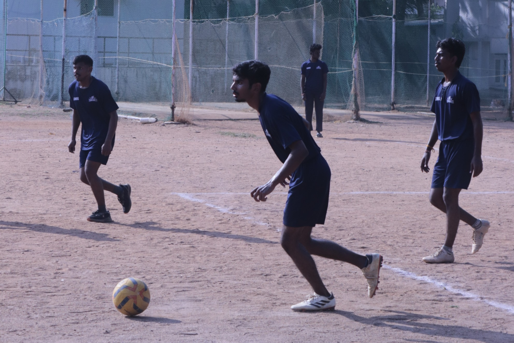

Football

I'm a devoted football fan. I regularly watch and play the sport for its intensity and for the love of the sports itself. I regularly participate in intra-college
competitions and local tournaments to keep myself fit. Most recently, in my under graduate degree, I participated and won an intra-college tournament, where
I played a crucial role in the success as the cornerstone of our team's defense. The sport has taught me cooperation and coordination when working in dynamic
teams, the importance of strategy and most importantly to never give up.
Public Speaking
 I actively engage in public speaking, participating in events like debates, presentations,
discussions and elocutions every chance I get, in both my academic work and in competetive settings. These experiences have helped me improve my confidence, clarity of
thought and my ability to communicate ideas clearly. It also helped me in shaping and improving my inter-personal skills and my language proficiency.
I actively engage in public speaking, participating in events like debates, presentations,
discussions and elocutions every chance I get, in both my academic work and in competetive settings. These experiences have helped me improve my confidence, clarity of
thought and my ability to communicate ideas clearly. It also helped me in shaping and improving my inter-personal skills and my language proficiency.
Creative Writing

My journey into creative writing began with small competitions that pushed me to craft and process ideas in imaginative and descriptive ways. I recently participated
in story writing and essay writing competetions in an intra-collegiate where I secured second and third place respectively. These competitions over time, sharpened my
ability to generate compelling narratives and convey messages effectively.